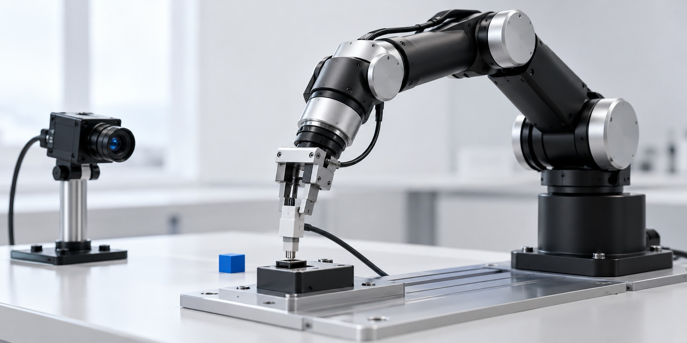
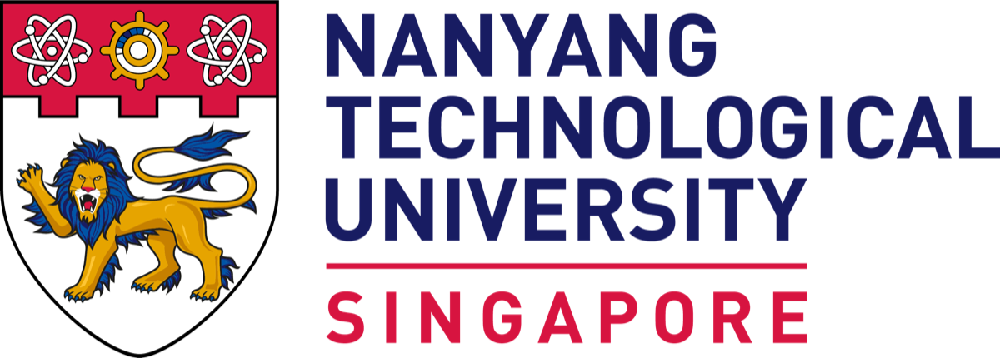

科学机器学习 · 2024
煤灰成分预测
利用近红外可见光谱与 PSO-ELM 预测煤灰成分，达到 R² = 0.98、RMSE = 0.79，本人以第一作者发表。

AI systems researcher • NTU Singapore
高蕴喆
Efficient AI, from edge to cloud.
我研究哪些任务适合在端侧完成、哪些需要云端模型，以及如何让两者在真实系统中可靠协同。
正在寻求 2027 年博士研究机会 · 新加坡 GMT+8
研究项目
如何让智能系统用更少的计算完成更多工作，同时不牺牲可靠性？
重点研究 · NTU · 2025—至今
基于置信度校准的端云协同推理，让大模型推理更节能。
Green-Edge-Cloud 让 1.5B 端侧模型利用自身置信度完成查询路由。面向路由的思维链蒸馏改善了置信度排序，使系统无需独立路由网络，也能将不确定的查询卸载至 72B 云端模型。
基于 Qwen2.5-72B-Instruct 与 Qwen2.5-1.5B-Instruct 开发面向路由的思维链蒸馏方法。
使用 vLLM 与 CodeCarbon 评估基于置信度的路由，并计入云端卸载期间的端侧空闲能耗。
通过独立校准、多随机种子评估、路由基线和量化实验扩展研究验证。
论文被 EIML@ICML 2026——第二届机器学习认知智能研讨会录用。
70.5% → 79.8%GSM8K 混合系统准确率原始学生 vs. 蒸馏学生
云端卸载率均为 15.2%
15.2%云端卸载率GSM8K 工作点
83%能耗降低相比纯云端
5.6×推理加速相比纯云端*
* 来自扩展评估；Workshop 论文未报告该速度指标。
精细机器人操作 · 东北大学 · 2024—25
我搭建了完整的 Koch v1.1 主从遥操作系统，覆盖电机标定、示范采集、ACT 策略训练、视觉感知与实时部署。

插头插接和传送带分拣两项任务，检验感知与控制能否在毫秒级时间内稳定协同。
86%插头抓取成功率
66%插接成功率
89.3%分拣成功率
14–15 msYOLOv5 延迟


MobileNetV2 将插接任务延迟从 20 ms 降至 16 ms，并支持 60 Hz 控制；YOLOv5 异步分割用于传送带分拣。
查看研究论文原文 · 中文应用智能
早期研究把光谱传感、工业过程数据和机器学习连接起来，转化为操作人员可以使用的决策信息。
科学机器学习 · 2024
利用近红外可见光谱与 PSO-ELM 预测煤灰成分，达到 R² = 0.98、RMSE = 0.79，本人以第一作者发表。
数字孪生 · 2023
ECAS 使用基于相关性的检索方法，将选矿设备当前状态与历史异常运行模式进行匹配。
中国软件著作权 · 国家银奖 · 东北大学特等奖
研究成果
来自系统研究与应用创新的同行评审成果、软件知识产权和竞赛奖项。
2026
已录用 · ICML 2026 Workshop（EIML）
Y. Gao, Z. Feng, K. Mao
查看论文原文 · 英文2024
核心期刊 · 《控制工程》
Y. Gao, J. Zou, D. Xiao
2023
中国计算机软件著作权 · 2023SR1469715
K. Zhang，Y. Gao（第二作者）
2023
中国计算机软件著作权 · 2023SR1421636
K. Zhang，P. Zhu，Y. Gao（第三作者）
个人简介
我的研究聚焦轻量化模型部署、高效多模态 AI 与可靠的边云协同。硕士论文方向为轻量级大语言模型的设计，以及面向高效本地推理的部署。

2025—26
计算机控制与自动化 硕士
2021—25
自动化 学士
2025—26
2023
2024—25
2021—22
技能
Python、C/C++、MATLAB、SQL、LaTeX
PyTorch、Transformers、Hugging Face、PEFT / LoRA、TRL、scikit-learn、思维链蒸馏、基于置信度的路由
模仿学习、ACT、ROS、MobileNetV2、YOLOv5、MuJoCo、Gazebo
vLLM、量化推理、边云协同推理、CodeCarbon、能耗与延迟分析、Linux、Docker、CUDA、Git
期待 2027 年博士研究机会